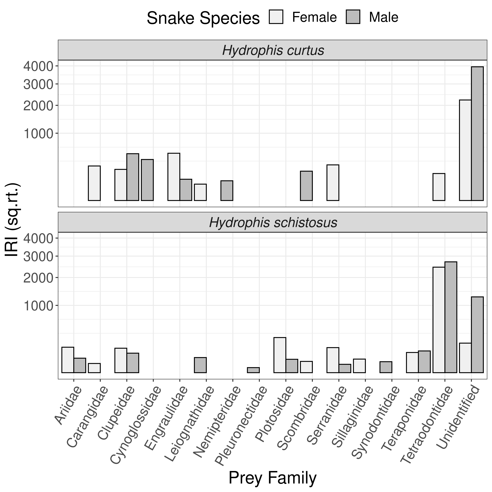

10 Difference in diet by sex within H. curtus and H. schsistosus
source("./Functions/setup.R")
gc = read.csv("./Data/Sea_snakes_gut_content_2018-19.csv") %>%
filter(Source == "Gut content") # removing specimens collected from fisheries landingsThe number of samples for conducting a sex wise analysis of feeding preference is limited for H. curtus.
10.1 Prey Preference
We modified and used the the Index of relative importance according to Pinkas et al. 1971 to determine the difference in prey preference between males and females in H. curtus and H. schistosus
# calulating index of relative importance (Pinkas et al. 1971)
IRI_sex <- gc%>%
left_join(snakes, by = c("Field.Code"))%>%
filter(Prey.Family != "", Sex != "", Snake.Species == "Hydrophis schistosus" | Snake.Species == "Hydrophis curtus")%>%
group_by(Snake.Species, Sex)%>%
mutate(Fr = length(unique(Field.Code)), # total number of snakes sampled
W = sum(Weight..g..x, na.rm = T), # total weight of prey sampled
N = n())%>% # total number of prey sampled
group_by(Snake.Species, Sex, Prey.Family)%>%
summarise(f = length(unique(Field.Code)), # number snakes in which prey family occured
Fr = last(Fr),
w = sum(Weight..g..x, na.rm = T), # weight of prey family
W = last(W),
n = n(), # number of individuals of prey family
N = last(N))%>%
group_by(Snake.Species, Sex, Prey.Family)%>%
# caluclating percentages
summarise(per.F = f*100/Fr,
per.W = w*100/W,
per.N = n*100/N,
# caluclating IRI
IRI = (per.N + per.W)*per.F)%>%
arrange(Snake.Species, Sex, desc(IRI))%>%
mutate(rank = 1:n())
# clean table
IRI_sex| Snake.Species | Sex | Prey.Family | per.F | per.W | per.N | IRI | rank |
|---|---|---|---|---|---|---|---|
| Hydrophis curtus | Female | Unidentified | 38.461539 | 19.5402299 | 38.461539 | 2230.837244 | 1 |
| Hydrophis curtus | Female | Engraulidae | 15.384615 | 16.6666667 | 15.384615 | 493.096647 | 2 |
| Hydrophis curtus | Female | Serranidae | 7.692308 | 28.7356322 | 7.692308 | 280.214922 | 3 |
| Hydrophis curtus | Female | Carangidae | 15.384615 | 1.7241379 | 15.384615 | 263.211590 | 4 |
| Hydrophis curtus | Female | Clupeidae | 7.692308 | 20.1149425 | 7.692308 | 213.901925 | 5 |
| Hydrophis curtus | Female | Tetraodontidae | 7.692308 | 13.2183908 | 7.692308 | 160.851527 | 6 |
| Hydrophis curtus | Female | Leiognathidae | 7.692308 | 0.0000000 | 7.692308 | 59.171598 | 7 |
| Hydrophis curtus | Male | Unidentified | 61.538461 | 10.8108108 | 53.333333 | 3947.331947 | 1 |
| Hydrophis curtus | Male | Clupeidae | 7.692308 | 49.5495495 | 13.333333 | 483.714484 | 2 |
| Hydrophis curtus | Male | Cynoglossidae | 15.384615 | 10.8108108 | 13.333333 | 371.448371 | 3 |
| Hydrophis curtus | Male | Scombridae | 7.692308 | 18.0180180 | 6.666667 | 189.882190 | 4 |
| Hydrophis curtus | Male | Engraulidae | 7.692308 | 6.3063063 | 6.666667 | 99.792100 | 5 |
| Hydrophis curtus | Male | Nemipteridae | 7.692308 | 4.5045045 | 6.666667 | 85.932086 | 6 |
| Hydrophis schistosus | Female | Tetraodontidae | 36.000000 | 33.6644592 | 34.615385 | 2458.074376 | 1 |
| Hydrophis schistosus | Female | Plotosidae | 12.000000 | 11.1754967 | 11.538462 | 272.567499 | 2 |
| Hydrophis schistosus | Female | Unidentified | 8.000000 | 12.5551876 | 11.538462 | 192.749193 | 3 |
| Hydrophis schistosus | Female | Ariidae | 8.000000 | 10.2097130 | 7.692308 | 143.216166 | 4 |
| Hydrophis schistosus | Female | Serranidae | 8.000000 | 9.6578366 | 7.692308 | 138.801155 | 5 |
| Hydrophis schistosus | Female | Clupeidae | 8.000000 | 8.8300221 | 7.692308 | 132.178638 | 6 |
| Hydrophis schistosus | Female | Teraponidae | 8.000000 | 3.5596026 | 7.692308 | 90.015283 | 7 |
| Hydrophis schistosus | Female | Sillaginidae | 4.000000 | 6.3465784 | 3.846154 | 40.770929 | 8 |
| Hydrophis schistosus | Female | Scombridae | 4.000000 | 3.1732892 | 3.846154 | 28.077772 | 9 |
| Hydrophis schistosus | Female | Carangidae | 4.000000 | 0.8278146 | 3.846154 | 18.695874 | 10 |
| Hydrophis schistosus | Male | Tetraodontidae | 32.608696 | 45.4308094 | 37.735849 | 2711.956254 | 1 |
| Hydrophis schistosus | Male | Unidentified | 30.434783 | 13.3681462 | 28.301887 | 1268.218396 | 2 |
| Hydrophis schistosus | Male | Teraponidae | 6.521739 | 10.3394256 | 5.660377 | 104.346541 | 3 |
| Hydrophis schistosus | Male | Clupeidae | 4.347826 | 13.6814621 | 5.660377 | 84.094954 | 4 |
| Hydrophis schistosus | Male | Leiognathidae | 6.521739 | 2.0887728 | 5.660377 | 50.537936 | 5 |
| Hydrophis schistosus | Male | Ariidae | 6.521739 | 1.4621410 | 5.660377 | 46.451207 | 6 |
| Hydrophis schistosus | Male | Plotosidae | 4.347826 | 5.3263708 | 3.773585 | 39.565025 | 7 |
| Hydrophis schistosus | Male | Synodontidae | 4.347826 | 2.3498695 | 3.773585 | 26.623715 | 8 |
| Hydrophis schistosus | Male | Serranidae | 2.173913 | 5.2219321 | 1.886793 | 15.453749 | 9 |
| Hydrophis schistosus | Male | Pleuronectidae | 2.173913 | 0.7310705 | 1.886793 | 5.691006 | 10 |
# plotting prey preference
IRI_sex %>%
ggplot(aes(Prey.Family, IRI, fill = Sex)) + geom_col(col = "black", position = position_dodge(preserve = "single")) +
scale_y_sqrt(name = "IRI (sq.rt.)") + labs(x = "Prey Family") + scale_fill_brewer(palette = "Greys",
name = "Snake Species") + theme(axis.text.x = element_text(hjust = 1, angle = 60),
strip.text = element_text(face = "italic")) + facet_wrap(~Snake.Species, ncol = 1)
10.2 Range of prey found in H. curtus and H. shistosus gut
We compared the dietary breadth between snakes species using the richness and diversity of prey families.
# Creating data matrix for prey community analysis analysis
fam_spade_sex = gc%>%
left_join(snakes, by = c("Field.Code"))%>%
filter(Prey.Family != "Unidentified", Prey.Family !="", Field.Code != "", Sex != "")%>% # removing unidentified specimens
group_by(Snake.Species, Sex, Prey.Family)%>%
summarise(n = n())%>% # total number of specimens per family in each snake species
unite("Species_sex", Snake.Species:Sex)%>%
spread(Species_sex, n, fill = 0)%>%
column_to_rownames("Prey.Family")10.2.1 Prey richness
gc%>%
left_join(snakes, by = c("Field.Code"))%>%
filter(Snake.Species == "Hydrophis schistosus" | Snake.Species == "Hydrophis curtus",
Prey.Family != "Unidentified", Prey.Family != "", Sex != "")%>%
group_by(Snake.Species, Sex)%>%
summarise(Prey.Species = length(unique(Prey.Species)) - 1, # removing unidentified
Prey.Families = length(unique(Prey.Family)))| Snake.Species | Sex | Prey.Species | Prey.Families |
|---|---|---|---|
| Hydrophis curtus | Female | 6 | 6 |
| Hydrophis curtus | Male | 4 | 5 |
| Hydrophis schistosus | Female | 12 | 9 |
| Hydrophis schistosus | Male | 10 | 9 |
10.2.2 Prey family diversity
# loading libraries
library(SpadeR) ## for community indices
# calculating shanon diversity
# HC_f_div = as.data.frame(Diversity(fam_spade_sex[,1])$Shannon_diversity)%>%
# rownames_to_column('Estimator')%>% mutate(Species = 'Hydrophis curtus', Sex =
# 'Female')
# HC_m_div = as.data.frame(Diversity(fam_spade_sex[,2])$Shannon_diversity)%>%
# rownames_to_column('Estimator')%>% mutate(Species = 'Hydrophis curtus', Sex =
# 'Male')
HS_f_div = as.data.frame(Diversity(fam_spade_sex[, 3])$Shannon_diversity) %>%
rownames_to_column("Estimator") %>%
mutate(Species = "Hydrophis schistosus", Sex = "Female")
HS_m_div = as.data.frame(Diversity(fam_spade_sex[, 4])$Shannon_diversity) %>%
rownames_to_column("Estimator") %>%
mutate(Species = "Hydrophis schistosus", Sex = "Male")
HS_m_div %>%
full_join(HS_f_div) %>%
dplyr::select(Species, Sex, everything()) %>%
arrange(Estimator)| Species | Sex | Estimator | Estimate | s.e. | 95%Lower | 95%Upper |
|---|---|---|---|---|---|---|
| Hydrophis schistosus | Male | Chao & Shen | 6.128 | 1.051 | 4.067 | 8.188 |
| Hydrophis schistosus | Female | Chao & Shen | 8.991 | 1.537 | 5.979 | 12.003 |
| Hydrophis schistosus | Male | Chao et al. (2013) | 5.895 | 1.083 | 3.773 | 8.017 |
| Hydrophis schistosus | Female | Chao et al. (2013) | 8.334 | 1.672 | 5.057 | 11.610 |
| Hydrophis schistosus | Male | Jackknife | 5.964 | 1.089 | 3.830 | 8.098 |
| Hydrophis schistosus | Female | Jackknife | 8.616 | 1.611 | 5.459 | 11.774 |
| Hydrophis schistosus | Male | MLE | 5.160 | 0.916 | 3.364 | 6.957 |
| Hydrophis schistosus | Female | MLE | 6.628 | 1.128 | 4.417 | 8.839 |
While H. schistosus fed on greater number of prey families, H. curtus showed greater evenness in prey preference.
Statistical comparison is difficult as each individual snake fed on only one type of specimen at time.
10.3 Diet overlap between Males and Females
Number of overlapping prey families:
gc %>%
left_join(snakes, by = "Field.Code") %>%
filter(Snake.Species == "Hydrophis schistosus" | Snake.Species == "Hydrophis curtus",
Prey.Family != "Unidentified", Prey.Family != "", Sex != "") %>%
group_by(Snake.Species, Prey.Family) %>%
summarise(N_pred = length(unique(Sex))) %>%
group_by(Snake.Species) %>%
summarise(Overlap = sum(N_pred > 1))| Snake.Species | Overlap |
|---|---|
| Hydrophis curtus | 2 |
| Hydrophis schistosus | 6 |
Morista - Horn overlap for Hydrophis schistosus:
prey_sim_HS <- SimilarityPair(X = fam_spade_sex[, 3:4], datatype = "abundance")
as.data.frame(prey_sim_HS$Empirical_relative)| Estimate | s.e. | 95%.LCL | 95%.UCL | |
|---|---|---|---|---|
| C12=U12(q=1,Horn) | 0.8235676 | 0.0790768 | 0.6685771 | 0.9785581 |
| C22(q=2,Morisita) | 0.9154857 | 0.1054702 | 0.7087641 | 1.0000000 |
| U22(q=2,Regional overlap) | 0.9558784 | 0.0700792 | 0.8185232 | 1.0000000 |
| ChaoJaccard | 0.7477000 | 0.1038000 | 0.5442520 | 0.9511480 |
| ChaoSorensen | 0.8556000 | 0.0781000 | 0.7025240 | 1.0086760 |
There was high overlap in prey between males and females in H. schistosus.
Morista - Horn overlap for Hydrophis schistosus:
# prey_sim_HC <- SimilarityPair(X = fam_spade_sex[,1:2], datatype =
# 'abundance')
# prey_sim_HC$Empirical_relativeVery low sample size.
10.3.1 Testing segregation in prey between sexes
# loading libraries
library(vegan)
# formating data for vegan
fam_simboo_sex <- gc %>%
left_join(snakes, by = "Field.Code") %>%
filter(Prey.Family != "Unidentified", Prey.Family != "", Field.Code != "", Sex !=
"") %>%
group_by(Snake.Species, Sex, Field.Code, Prey.Family) %>%
summarise(n = n()) %>%
spread(Prey.Family, n, fill = 0) %>%
ungroup()H. curtus:
# PERMANOVA to compare composition
set.seed(2)
permanova_hc <- adonis2(fam_simboo_sex[1:14, 4:length(fam_simboo_sex)] ~ fam_simboo_sex[1:14,
]$Sex, data = fam_simboo_sex[1:14, 2])
## clean table
broom::tidy(permanova_hc)| term | df | SumOfSqs | R2 | statistic | p.value |
|---|---|---|---|---|---|
| fam_simboo_sex[1:14, ]$Sex | 1 | 0.4960317 | 0.0815927 | 1.066098 | 0.369 |
| Residual | 12 | 5.5833333 | 0.9184073 | ||
| Total | 13 | 6.0793651 | 1.0000000 |
No difference in prey preference, however, sample sizes are low.
H. schistosus:
permanova_hs <- adonis2(fam_simboo_sex[15:69, 4:length(fam_simboo_sex)] ~ fam_simboo_sex[15:69,
]$Sex, data = fam_simboo_sex[15:69, 2])
## clean table
broom::tidy(permanova_hc)| term | df | SumOfSqs | R2 | statistic | p.value |
|---|---|---|---|---|---|
| fam_simboo_sex[1:14, ]$Sex | 1 | 0.4960317 | 0.0815927 | 1.066098 | 0.369 |
| Residual | 12 | 5.5833333 | 0.9184073 | ||
| Total | 13 | 6.0793651 | 1.0000000 |
No difference in prey preference across species.
10.4 Difference in size selectivity of prey between H. curtus and H. schistosus
# summary
gc%>%
left_join(snakes, by = c("Field.Code"))%>%
filter(Snake.Species == "Hydrophis schistosus" | Snake.Species == "Hydrophis curtus", Sex != "",
Condition < 3)%>% # removing very digested specimens
group_by(Snake.Species, Sex)%>%
skimr::skim(Maximum.Body.Girth..cm.)%>%
skimr::yank("numeric")%>%
dplyr::select(Snake.Species:p100)Variable type: numeric
| Snake.Species | Sex | n_missing | complete_rate | mean | sd | p0 | p25 | p50 | p75 | p100 |
|---|---|---|---|---|---|---|---|---|---|---|
| Hydrophis curtus | Female | 0 | 1.00 | 3.06 | 1.04 | 2.00 | 2.10 | 3.2 | 3.50 | 4.50 |
| Hydrophis curtus | Male | 1 | 0.83 | 2.38 | 0.42 | 2.00 | 2.00 | 2.4 | 2.50 | 3.01 |
| Hydrophis schistosus | Female | 0 | 1.00 | 3.99 | 0.88 | 2.50 | 3.10 | 4.2 | 4.70 | 5.00 |
| Hydrophis schistosus | Male | 0 | 1.00 | 3.30 | 1.21 | 1.06 | 2.62 | 3.6 | 4.15 | 5.50 |
# testing diff max prey width by species
gc%>%
left_join(snakes, by = c("Field.Code"))%>%
filter(Snake.Species == "Hydrophis schistosus" | Snake.Species == "Hydrophis curtus", Sex != "",
Condition < 3, # removing very digested specimens
!is.na(Maximum.Body.Girth..cm.))%>% # removing unrecorded data
dplyr::select(Snake.Species, Sex, Maximum.Body.Girth..cm.)%>%
droplevels()%>%
group_by(Snake.Species)%>%
nest()%>%
mutate(test = map(data, ~t.test(Maximum.Body.Girth..cm. ~ Sex, data = .)), # t test
sumry = map(test, broom::tidy),
d = map(data, ~lsr::cohensD(Maximum.Body.Girth..cm. ~ Sex, data = .)))%>% # effect size
dplyr::select(sumry, d)%>%
unnest()%>%
dplyr::select(estimate1:parameter, d)%>%
rename(`Females` = estimate1,
`Males` = estimate2)| Snake.Species | Females | Males | statistic | p.value | parameter | d |
|---|---|---|---|---|---|---|
| Hydrophis schistosus | 3.989231 | 3.304778 | 1.818943 | 0.0792649 | 28.989212 | 0.6290091 |
| Hydrophis curtus | 3.060000 | 2.382600 | 1.349915 | 0.2321573 | 5.267076 | 0.8537610 |
There were no significant differences in prey girth across sexes in both species. However, females did take slightly larger prey in both cases.